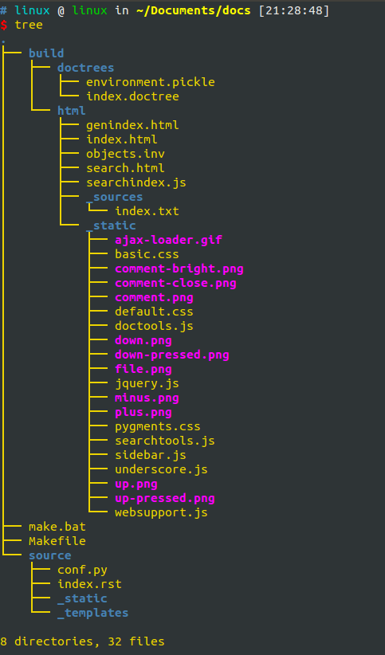
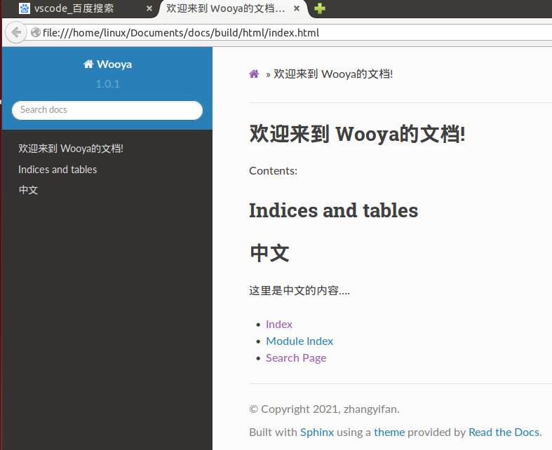

1.3. 一、Ubuntu安装sphinx¶
Sphinx不是开发搜索功能的软件，而是生成文档的工具。它使用reStructuredText编写文档，这是一种类似Markdown的简单标记语言。
1.3.1. 1.一定要下载3.6+版本的python¶
这是Read the Docs的文档中说明的。
$ wget https://www.python.org/ftp/python/3.6.8/Python-3.6.8.tgz
$ tar -xvf Python-3.6.8.tgz
$ cd Python-3.6.8.tgz
$ ./configure
$ make
$ make install
并查看python的版本，因此在使用python命令的时候使用python3.6
# linux @ linux in ~/Documents/docs/source [21:09:36]
$ python
Python 2.7.6 (default, Mar 22 2014, 22:59:38)
[GCC 4.8.2] on linux2
Type "help", "copyright", "credits" or "license" for more information.
>>>
# linux @ linux in ~/Documents/docs/source [21:09:42]
$ python3
Python 3.4.0 (default, Apr 11 2014, 13:05:18)
[GCC 4.8.2] on linux
Type "help", "copyright", "credits" or "license" for more information.
>>>
# linux @ linux in ~/Documents/docs/source [21:09:48]
$ python3.6
Python 3.6.8 (default, Mar 9 2021, 09:21:57)
[GCC 4.8.4] on linux
Type "help", "copyright", "credits" or "license" for more information.
>>>
1.3.2. 2.安装依赖环境¶
#Read the Docs提示，你在安装的时候直接下载不用默认下载的依赖，需要设置依赖的版本如下
sphinx==3.4.3
sphinx_rtd_theme==0.5.1
readthedocs-sphinx-search==0.1.0rc3
#如果你的pip版本达不到要求，也要升级pip到21.0.1版本
$ sudo pip3 install --upgrade pip
$ sudo apt install python3-pip
1.3.3. 3.安装sphinx¶
$ sudo pip3 install sphinx==3.4.3
#但是发现下载的sphinx的版本是1.2.2
$ sudo pip3 install --upgrade sphinx
#升级到3.5.2，就可以解决掉一些问题了
$ pip install sphinx_rtd_theme==0.5.1 #安装主题环境模块
$ pip install readthedocs-sphinx-search==0.1.0rc3 #安装查询脚本
好了，现在你的Ubuntu里面有sphinx软件了，就可以创建文档工程了。
1.4. 二、创建文档工程¶
1.4.3. 3.分析目录¶

目录很简单，我们重点注意的文件是source目录和build目录。
source/index.rst :用于编写文档。
source/conf.py :用于配置工程，比如添加文档页面的主题等。
build/html/index.html:是我们编译index.rst文件以后生成相对应的文档页面。
build/html/_sources/index.html:是编译过后生成的文档，我们可以用它来控制文档的版本。
make.bat:使用 make html 可以取代 sphinx-build -b html
1.5. 三、修改网页主题¶
在source/conf.py文件中添加如下代码可以修改页面主题风格。
import sphinx_rtd_theme
#html_theme = 'default'
html_theme = 'sphinx_rtd_theme'
html_theme_path = [sphinx_rtd_theme.get_html_theme_path()]

1.6. 四、让Sphinx支持中文全文搜索¶
并不是sphinx这个软件不能写中文，而是文档里有搜索引擎功能
1.6.1. 1.autoconf-2.64安装¶
$ wget ftp://ftp.gnu.org/gnu/autoconf/autoconf-2.69.tar.gz
$ tar -xvf autoconf-2.69.tar.gz
$ ./configure
$ make && make install
1.6.2. 2.coreseek安装¶
首先获取并安装mmseg-3.2.14.tar.gz文件
$ tar -xzvf coreseek-3.2.14.tar.gz
$ cd coreseek-3.2.14
$ ls
csft-3.2.14 mmseg-3.2.14 README.txt testpack
$ mkdir /usr/local/mmseg
$ cd mmseg-3.2.14
$ aclocal
$ libtoolize --force
$ automake --add-missing
$ autoconf
$ autoheader
$ make clean
...
rm -f *.o
rm -f *.lo
make[1]: Leaving directory `/home/linux/mmseg-3.2.14/src'
make[1]: Entering directory `/home/linux/mmseg-3.2.14'
rm -rf .libs _libs
rm -f *.lo
make[1]: Leaving directory `/home/linux/mmseg-3.2.14'
$ ./configure --prefix=/usr/local/mmseg
...
config.status: executing default commands
------------------------------------------------------------------------
Configuration:
Source code location: .
Compiler: gcc
Compiler flags: -g -O2
Host System Type: i686-pc-linux-gnu
Install path: /usr/local/mmseg
See config.h for further configuration information.
------------------------------------------------------------------------
$ make
$ sudo make install
$ sudo cp -f src/*/*.h /usr/local/mmseg/include/mmseg/
#安装
$ cd ..
$ cd csft-3.2.14
$ bash buildconf.sh
$ aclocal
$ libtoolize --force
$ automake --add-missing
$ autoconf
$ autoheader
$ perl -pi -e 's/lpthread/lpthread -liconv/g' src/Makefile*
$ make clean #此时如有错误可忽略不管
$ ./configure --prefix=/usr/local/coreseek --without-unixodbc --with-mmseg --with-mmseg-includes=/usr/local/mmseg/include/mmseg/ --with-mmseg-libs=/usr/local/mmseg/lib/ --with-mysql
$ make
$ make install
cp /usr/local/coreseek/etc/sphinx.conf.dist /usr/local/coreseek/etc/csft.conf
#测试mmseg分词和coreseek搜索:
1.7. 五、使用Markdown编写Sphinx¶
Sphinx 默认是使用reStructuredText(简称reST) 格式进行写作，喜欢Markdown格式可以使用Recommonmark插件来实现。
1.7.1. 安装myst-parser¶
可以在项目中使用MyST 编写，它作为MyST markdown语言的解析器
$ pip install myst-parser
WARNING: The script markdown-it is installed in '/home/linux/.local/bin' which is not on PATH.
Consider adding this directory to PATH or, if you prefer to suppress this warning, use --no-warn-script-location.
WARNING: The script myst-anchors is installed in '/home/linux/.local/bin' which is not on PATH.
Consider adding this directory to PATH or, if you prefer to suppress this warning, use --no-warn-script-location.